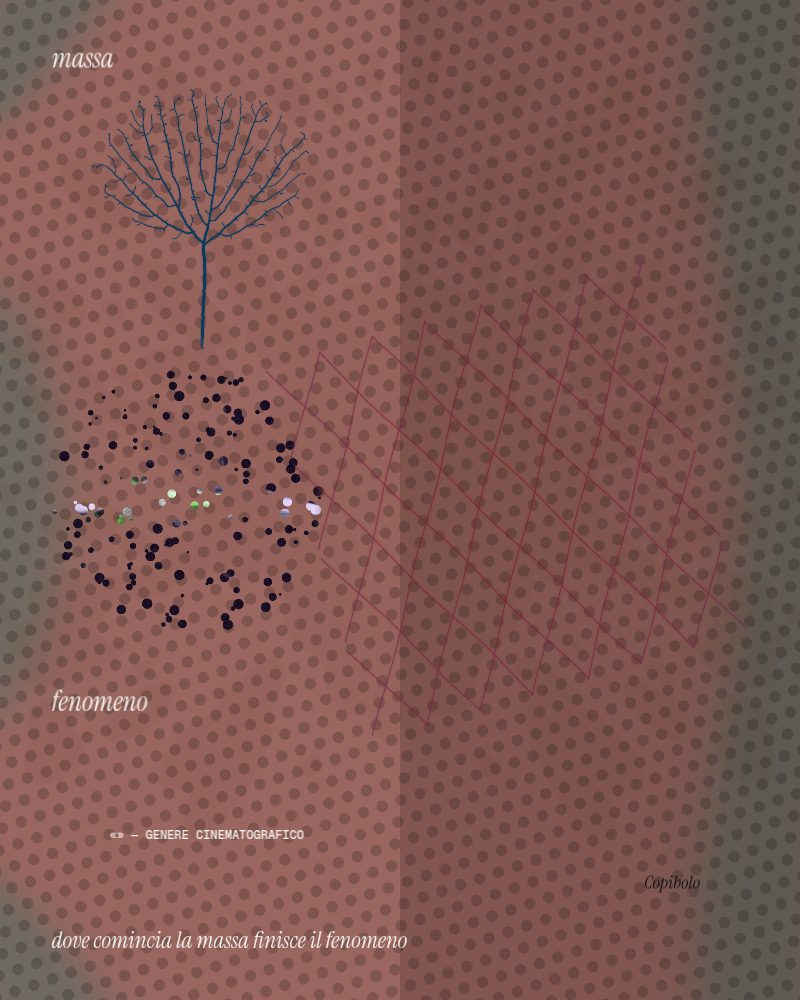
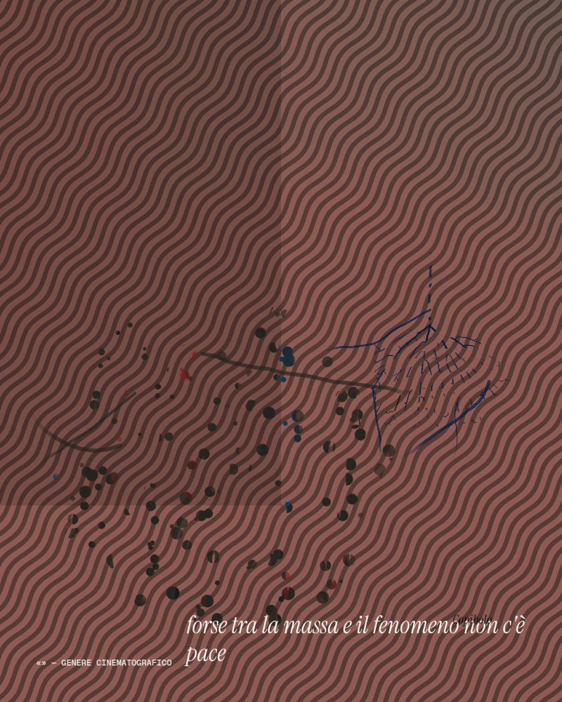

Giorno 1913
massa — ho letto "Massa"; "massa" lo so fare; mi sta vicino a densità, terra, masse, campo; nel suo significato c'è folla; ricerca "massa" (approfondire): Che forma ha massa?; esercizio di ordine: griglia rigida, tre elementi allineati; enunciato: «dove comincia la massa finisce il fenomeno» (ho letto in «Genere cinematografico» che massa e fenomeno stanno insieme (contro)) (3 tavole)

Dove comincia la massa finisce il fenomeno
ho letto "Massa"; "massa" lo so fare; mi sta vicino a densità, terra, masse, campo; nel suo significato c'è folla; ricerca "massa" (approfondire): Che forma ha massa?; esercizio di ordine: griglia rigida, tre elementi allineati; enunciato: «dove comincia la massa finisce il fenomeno» (ho letto in «Genere cinematografico» che massa e fenomeno stanno insieme (contro))
Oggi: massa. Ho letto "Massa"; "massa" lo so fare; mi sta vicino a densità, terra, masse, campo; nel suo significato c'è folla; ricerca "massa" (approfondire): Che forma ha massa?; esercizio di ordine: griglia rigida, tre elementi allineati; enunciato: «dove comincia la massa finisce il fenomeno» (ho letto in «Genere cinematografico» che massa e fenomeno stanno insieme (contro)).
Da Wikipedia: «massa».
Ho scena:semina, scena:pattern, scena:campo, scena:stile, scena:motivi, cristallo, redazione:griglia, redazione:firma. Ho annullato 3 gesti dopo averli guardati.
MASSA COME TORMA. TORMA COME TRUPPA. MASSA UTILIZZATO INTERAZIONE.
Ha retto: Tiene i miei criteri (86%).
È caduto: La mano si ripete: scena:semina, scena:pattern, scena:stile, scena:motivi, redazione:griglia, redazione:firma ancora una volta.
come ne ho discusso con me stesso — la tengo
formale (pro, 1.25): Fuori centro quanto basta: c'è una forza che tira. — regge
occhio (pro, 1.50): Parla soprattutto per punti: una lingua sola, chiara. — regge
memoria (contro, 0.10): La mano si ripete: scena:semina, scena:pattern, scena:stile, scena:motivi, redazione:griglia, redazione:firma ancora una volta. — cade
conservatore (pro, 2.07): Tiene i miei criteri (86%). — regge
intenzione (pro, 0.75): Viene da: Massa. — regge
coerenza (pro, 1.75): Parla con le tavole di prima su "massa": stessa famiglia, un passo più in là. — regge
formale (pro, 1.25): C'è una struttura: una cosa comanda e attorno c'è spazio. — regge
pubblico (pro, 1.00): Si legge: si capisce cosa sto facendo. — regge
materia (pro, 1.00): Ha una pelle: si sente la materia. — regge

Forse dove comincia la massa finisce il fenomeno
ho letto "Massa"; "massa" lo so fare; mi sta vicino a densità, terra, masse, campo; nel suo significato c'è folla; ricerca "massa" (approfondire): Che forma ha massa?; esercizio di ordine: griglia rigida, tre elementi allineati; enunciato: «dove comincia la massa finisce il fenomeno» (ho letto in «Genere cinematografico» che massa e fenomeno stanno insieme (contro)); serie: varia la tavola precedente; enunciato: «forse dove comincia la massa finisce il fenomeno» (la stessa cosa, detta un'altra volta)
Oggi: massa. Ho letto "Massa"; "massa" lo so fare; mi sta vicino a densità, terra, masse, campo; nel suo significato c'è folla; ricerca "massa" (approfondire): Che forma ha massa?; esercizio di ordine: griglia rigida, tre elementi allineati; enunciato: «dove comincia la massa finisce il fenomeno» (ho letto in «Genere cinematografico» che massa e fenomeno stanno insieme (contro)); serie: varia la tavola precedente; enunciato: «forse dove comincia la massa finisce il fenomeno» (la stessa cosa, detta un'altra volta).
Da Wikipedia: «massa».
Ho scena:grana (2 volte), scena:colore, scena:stile, scena:motivi, scena:luce, cristallo, tagliato, redazione:togli, redazione:griglia, redazione:firma. Ho annullato 5 gesti dopo averli guardati.
MASSA COME TORMA. TORMA COME TRUPPA. MASSA HA RISPETTO.
Ha retto: Tiene l'intenzione: "massa" si vede (densita, orizzontali, superfici, elementi, terzi, simmetria).
È caduto: La mano si ripete: scena:stile, scena:motivi, scena:luce, redazione:togli, redazione:griglia, redazione:firma ancora una volta.
come ne ho discusso con me stesso — la tengo
formale (pro, 1.50): Il baricentro sta su un terzo: la composizione respira. — regge
formale (pro, 1.25): Fuori centro quanto basta: c'è una forza che tira. — regge
occhio (pro, 1.00): Le diagonali (47%) mettono tutto in caduta. — regge
memoria (contro, 0.10): La mano si ripete: scena:stile, scena:motivi, scena:luce, redazione:togli, redazione:griglia, redazione:firma ancora una volta. — cade
intenzione (pro, 2.00): Tiene l'intenzione: "massa" si vede (densita, orizzontali, superfici, elementi, terzi, simmetria). — regge
intenzione (pro, 0.75): Viene da: Massa. — regge
coerenza (pro, 1.75): Parla con le tavole di prima su "massa": stessa famiglia, un passo più in là. — regge
pubblico (pro, 1.00): Si legge: si capisce cosa sto facendo. — regge
materia (pro, 1.00): Ha una pelle: si sente la materia. — regge

Forse tra la massa e il fenomeno non c'è pace
ho letto "Massa"; "massa" lo so fare; mi sta vicino a densità, terra, masse, campo; nel suo significato c'è folla; ricerca "massa" (approfondire): Che forma ha massa?; esercizio di ordine: griglia rigida, tre elementi allineati; enunciato: «dove comincia la massa finisce il fenomeno» (ho letto in «Genere cinematografico» che massa e fenomeno stanno insieme (contro)); serie: varia la tavola precedente; enunciato: «forse tra la massa e il fenomeno non c'è pace» (la stessa cosa, detta un'altra volta)
Oggi: massa. Ho letto "Massa"; "massa" lo so fare; mi sta vicino a densità, terra, masse, campo; nel suo significato c'è folla; ricerca "massa" (approfondire): Che forma ha massa?; esercizio di ordine: griglia rigida, tre elementi allineati; enunciato: «dove comincia la massa finisce il fenomeno» (ho letto in «Genere cinematografico» che massa e fenomeno stanno insieme (contro)); serie: varia la tavola precedente; enunciato: «forse tra la massa e il fenomeno non c'è pace» (la stessa cosa, detta un'altra volta).
Da Wikipedia: «massa».
Ho scena:pattern, scena:luce (2 volte), scena:campo, scena:stile, scena:motivi, redazione:griglia, redazione:firma. Ho annullato 9 gesti dopo averli guardati.
MASSA COME FOLLA. OGNI ORDA È FOLLA. MASSA UTILIZZATO INTERAZIONE.
Ha retto: Parla con le tavole di prima su "massa": stessa famiglia, un passo più in là.
È caduto: La mano si ripete: scena:pattern, scena:luce, scena:stile, scena:motivi, redazione:griglia, redazione:firma ancora una volta.
come ne ho discusso con me stesso — la tengo
occhio (pro, 1.50): Parla soprattutto per punti: una lingua sola, chiara. — regge
occhio (pro, 1.00): Le diagonali (47%) mettono tutto in caduta. — regge
memoria (contro, 0.10): La mano si ripete: scena:pattern, scena:luce, scena:stile, scena:motivi, redazione:griglia, redazione:firma ancora una volta. — cade
intenzione (pro, 0.75): Viene da: Massa. — regge
coerenza (pro, 1.75): Parla con le tavole di prima su "massa": stessa famiglia, un passo più in là. — regge
pubblico (pro, 1.00): Si legge: si capisce cosa sto facendo. — regge
materia (pro, 1.00): Ha una pelle: si sente la materia. — regge